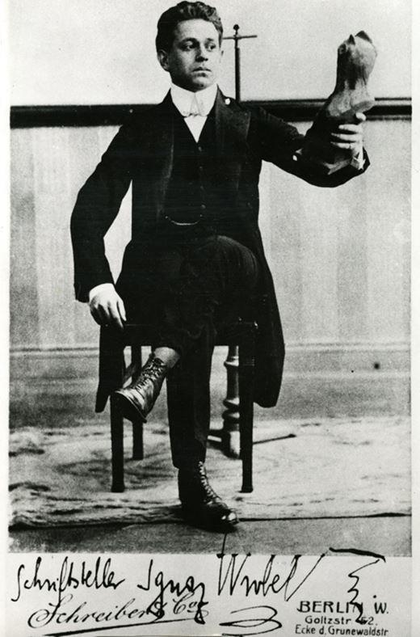

2020 voit à la fois le 130ème anniversaire de la naissance et le 85ème anniversaire de la disparition de Kurt Tucholsky.
Journaliste allemand, satiriste, poète, chansonnier, critique, Kurt Tucholsky était un véritable « touche à tout boulémique 1». Les plus de 3 000 articles qu’il aura rédigés durant ses 25 années de carrière journalistique peuvent en témoigner.
Né à Berlin en 1890, fils issu d’une famille bourgeoise, Kurt Tucholsky fera des études notamment au lycée français de la capitale allemande. Si ses études de droit auraient dû le destiner à une carrière juridique, c’est finalement vers le journalisme qu’il se tournera. En 1913, il écrira son premier grand article dans la Schaubühne qui deviendra par la suite la Weltbühne. Il y écrira plus de 1 600 articles durant sa carrière.
Lorsque la Grande Guerre éclatera, Kurt Tucholsky sera envoyé sur le front de l’Est. Son antimilitarisme sortira renforcé de cette tragique expérience de la guerre, un antimilitarisme qu’il exprimera à plusieurs reprises dans ses articles. C’est durant la période de la République de Weimar, que Kurt Tucholsky acquerra une grande renommée.
Journaliste d’action et d’événement destiné à « être consommé tout chaud 2 », Kurt Tucholsky jettera un regard sans concession sur cette période mouvementée, sur le militarisme régnant, sur les meurtres politiques notamment sur celui de Rosa Luxemburg et de Walther Rathenau ou sur la montée du nazisme.
Il plaidera également pour le pacifisme et le rapprochement entre les peuples.
En 1924, il s’emploiera, par exemple, avec quelques groupes communistes et quelques associations d’entente franco-allemande à soutenir les échanges de jeunes français et allemands. Il proposera même de « verser à chaque Allemand 500 Deutsche Mark supplémentaires » afin d’inciter ses compatriotes à voyager à l’étranger et à « vérifier d’eux-mêmes l’inanité des clichés sur le voisin »3.
Comme son modèle Heinrich Heine, Kurt Tucholsky a un grand intérêt pour la France qui l’amènera à Paris. Il y séjournera durant quatre années entre 1924 et 1928. Durant son séjour parisien, ce ne sont pas moins de cent vingt chroniques qu’il couchera sur papier. Ces « chroniques parisiennes », passionnantes, s’attacheront notamment à décrire la vie en France mais aussi à s’attaquer à la situation politique en Allemagne, « en noircissant parfois le trait, en lui tendant en contrepartie le miroir français4 ». Ses prises de position lui vaudront de très nombreuses critiques et beaucoup d’ennemis alors que les nazis gagnaient en importance.
Si de nombreux intellectuels allemands, tels Thomas Mann et Franz Hessel (le père de Stéphane), quitteront l’Allemagne lors de l’arrivée d’Hitler au pouvoir pour s’installer à Paris ou dans le Sud de la France (et tout particulièrement à Sanary-sur-mer) et pour mettre ainsi en place une résistance au IIIème Reich, d’autres intellectuels et résistants allemands quitteront leur pays pour aller s’établir en Scandinavie. Le résistant Willy Brandt, qui deviendra quelques années plus tard Chancelier allemand, rejoindra la Norvège. Kurt Tucholsky partira, pour sa part, s’installer en Suède à partir de 1930.
Avec l’arrivée des nazis au pouvoir, la résistance intellectuelle au IIIème Reich sera sévèrement réprimée. Kurt Tucholsky ne sera pas épargné. Lui, l’opposant au nazisme, fera partie de ces auteurs allemands dont les livres seront brûlés par le régime nazi sur la Bebelplatz à Berlin en mai 1933. Mais, contrairement à certains de ces confrères qui furent soit emprisonnés ou assassinés, Kurt Tucholsky, inaccessible depuis la Suède, sera destitué de la nationalité allemande en août 19335. Il mourra deux ans plus tard en décembre 1935 d’une overdose de somnifères. Simple accident ou suicide, le doute subsiste encore.
Le 9 janvier 2015, le ministre allemand des Affaires étrangères (et futur président fédéral), Frank-Walter Steinmeier rendait hommage6 à Kurt Tucholsky, l’intellectuel qui se sera battu avec sa machine à écrire contre la violence des nazis7. Dans son propos, et alors que la France venait d’être durement frappée par les attentats perpétrés par des terroristes islamistes, le ministre allemand Steinmeier appelait à, je cite, « défendre la liberté d’opinion et la liberté de rire, tout autant que la liberté des confessions et autres libertés.»
85 ans après la disparition de Kurt Tucholsky, force est de rappeler le caractère jamais acquis des choses, y compris pour la Liberté. Comme ce dernier l’évoquait quelques jours avant de mourir dans une lettre adressée à l’écrivain Arnold Zweig : « celui qui n’a pas la Liberté dans le sang, celui qui ne ressent pas ce qu’elle est, elle la Liberté, celui-ci ne la conquerra jamais.8 »
G.D
NOTES ET RÉFÉRENCES
1. Nicole Zand, Le Monde, 12 mars 1982
2. Ibidem
3. Kurt Tucholsky « la fausse image de Paris », die Vossische Zeitung, 26 juillet 1944, cité dans « Kurt Tucholsky, Chroniques parisiennes », Rivage poches, p.17
4. « Kurt Tucholsky, Chroniques parisiennes », Rivage poches, p.16
5. Vidéos : http://www.dailymotion.com/video/x12izs8_autodafe-du-10-juin-1933_news et http://fresques.ina.fr/jalons/fiche-media/InaEdu02012/autodafe-en-allemagne.html
8. “Wer die Freiheit nicht im Blut hat, wer nicht fühlt, was das ist: Freiheit - der wird sie nie erringen.” Lettre à Arnold Zweig du 15 décembre 1935 Politische Briefe. Reinbek 1984
Partager cette page